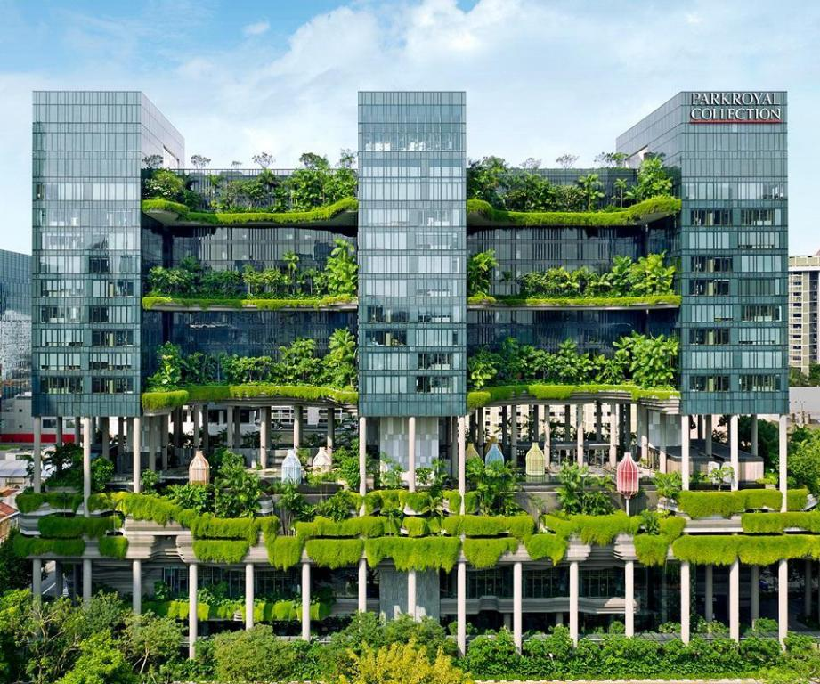
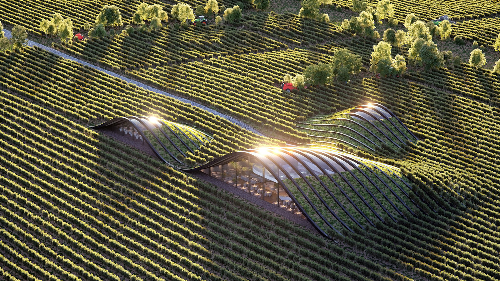
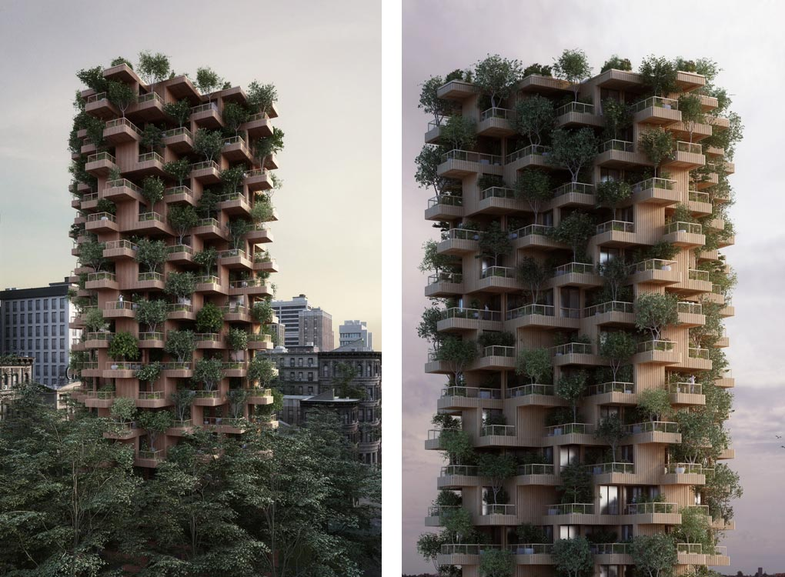

Green architecture is a philosophy of architecture that advocates sustainable energy sources, the conservation of energy, the reuse and safety of building materials, and the siting of a building with consideration of its impact on the environment. Continuing advances in environmental technology have significantly strengthened the goals of sustainable architecture and city planning over the last decade. Yet many people consider the environmental crisis beyond their comprehension and control. Though technological solutions are necessary, they represent only one facet of the whole.

Parkroyal Hotel in Pickering, Singapore
Massive curvaceous sky-gardens, draped with tropical plants and supporting swathes of frangipani and palm trees, are cantilevered at every fourth level between the blocks of guest rooms. Greenery flourishes throughout the entire complex, and the trees and gardens of the hotel appears to merge with those of the adjoining park as one continuous sweep of urban parkland. The building is a beautiful combination of both green and organic architecture, and it stands out in Singapore's mostly bland skyline.

Shilda Wine Tasting Complex in Kakheti, Georgia
The shape is said to be a 'considered response to the environmental factors of the area and the qualities of the wine', according to the company website. The building is quite literally embedded within the landscape of the vineyards, making it barely noticeable from a birds eye view. What's more, the thermal mass of the soil is used to optimise the cooling of the building, and most of the facade is facing towards the north to avoid direct solar gain, reducing energy waste.

Toronto Tree Tower proposed for Toronto, Canada
This is a proposed residential block made from timber, incorporating staggered walls with plants and trees sprouting from the generous balconies. Architect Chris Precht spoke about his project saying,"We will achieve that by a connection to nature and integration of plants. Buildings with ecological materials we want to touch. Integrated gardens we can smell and eat. And buildings we can hear because bees and birds nest in them. Sensible buildings that make us feel alive. That’s my dream of the future.”